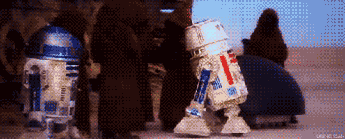

FIGURE
Hasbro, Kenner, G.I. Joe.


The R4 Astromech Droid is a multifunctional droid in the Star Wars franchise that provides navigational and maintenance assistance to pilots.
The early R4 droid was created by combining models and mechanical devices. With the development of technology, digital special effects were gradually used in later works to enhance performance and ensure smoother interactions and complex scene requirements.
The early R4 droid was created by combining models and mechanical devices. With the development of technology, digital special effects were gradually used in later works to enhance performance and ensure smoother interactions and complex scene requirements.